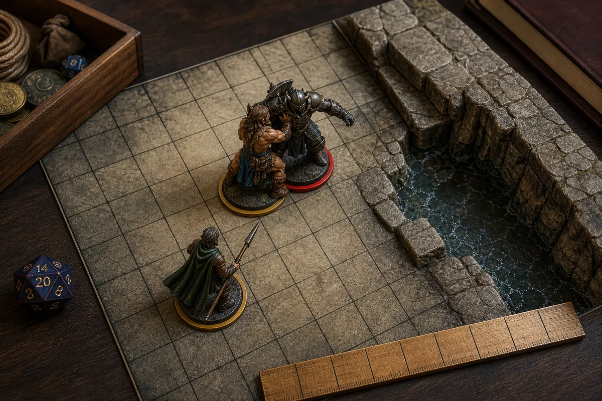
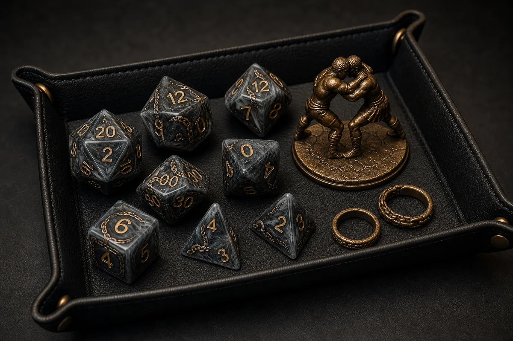

Grappling is a control option, not a complete wrestling simulation. A successful grapple normally stops movement and allows the grappler to move the target at a cost. It does not automatically deal damage, silence the target, stop spellcasting, impose the Restrained condition, or make every attack easier. Those additional effects require another rule, feature, spell, monster action, or a separate shove.
The confusion comes from a major rules change. In 2014 5e, a grapple begins with an opposed ability check. In the updated rules, Grapple is an option of an Unarmed Strike and the target makes a saving throw against a fixed DC. Advice about Athletics expertise, ties, Opportunity Attacks, and defensive bonuses can be correct for one version and wrong for the other.
5e grapple rules: the quick answer
2014 rules: take the Attack action, replace one attack with a grapple attempt, and roll Strength (Athletics). The target opposes that roll with Strength (Athletics) or Dexterity (Acrobatics). You need a free hand, the target must be within reach, and it cannot be more than one size larger than you.
Updated rules: use the Grapple option of an Unarmed Strike. The target chooses a Strength or Dexterity saving throw against your grapple DC: 8 + Proficiency Bonus + Strength modifier. You still need a free hand, and the target can be no more than one size larger.
On success, the target gains the Grappled condition. Its Speed becomes 0. The exact additional effects and movement wording depend on the ruleset. The official 2014 combat rules and updated rules glossary provide the controlling text.
2014 vs updated grapple rules
| Rule question | 2014 5e | Updated rules |
|---|---|---|
| How it starts | Special melee attack within the Attack action | Grapple option of an Unarmed Strike |
| Resolution | Opposed ability checks | Target makes a saving throw against a fixed DC |
| Attacker's value | Strength (Athletics) | 8 + Proficiency Bonus + Strength modifier, unless a feature changes it |
| Defender's choice | Strength (Athletics) or Dexterity (Acrobatics) | Strength or Dexterity saving throw |
| Attacking others | No penalty from Grappled alone | Disadvantage against targets other than the grappler |
| Moving the target | Your speed is halved, with a size exception | Each foot costs 1 extra foot, with Tiny and size exceptions |
| Opportunity Attack | No, because grappling requires the Attack action | Yes, an Opportunity Attack can use an Unarmed Strike |
How to grapple in 2014 5e
- Take the Attack action and choose a creature within your reach.
- Confirm that the target is no more than one size larger and that you have at least one free hand.
- Replace one attack with a Strength (Athletics) grapple check. Extra Attack can let you grapple and make another attack during the same Attack action.
- The target chooses Strength (Athletics) or Dexterity (Acrobatics) and rolls an opposed check.
- If your total is higher, the target becomes grappled. On a tie, the situation remains unchanged, so a new grapple does not take hold.
Armor Class does not matter because this is not an attack roll. Weapon attack bonuses do not apply. Athletics proficiency, Expertise, advantage on Strength checks, and effects that modify ability checks can matter. A natural 20 is not automatically successful on an ability check unless the table uses a house rule; compare the final totals.
How to grapple in the updated rules
- Use an Unarmed Strike and choose its Grapple option rather than its Damage or Shove option.
- Choose a target within 5 feet that is no more than one size larger. You need a free hand.
- Calculate the grapple DC: 8 + your Proficiency Bonus + your Strength modifier. A class feature may allow a different ability, such as Dexterity for an updated Monk.
- The target chooses a Strength or Dexterity saving throw.
- On a failed save, the target gains the Grappled condition.
The grappler does not roll an attack or Athletics check for a normal updated grapple. Athletics Expertise therefore does not improve the initial save DC, although Athletics can still help your character escape a grapple. Effects that improve the target's Strength or Dexterity saving throw can protect it from the initial attempt.

What does the Grappled condition do?
In both versions, the core effect is Speed 0. A grappled creature cannot increase its Speed, so it cannot walk away. If it is also Prone, it generally cannot stand because standing requires movement and its Speed is 0.
Under 2014 rules, Grappled alone does not change attack rolls. The creature can attack the grappler or somebody else normally, subject to other conditions. Under updated rules, the grappled creature has Disadvantage on attack rolls against any target other than the grappler. It can attack the grappler without that particular penalty.
Grappled is not Restrained. Attacks against a merely grappled target do not automatically gain Advantage. The target can still speak, take actions, use items, and cast spells unless another rule prevents it. Spell components still apply normally, but the Grappled condition itself does not occupy the target's hands or silence it.
Can you move a grappled creature?
Yes. In 2014, the grappler can drag or carry the target while moving, but the grappler's speed is halved unless the target is two or more sizes smaller. In updated rules, each foot of movement costs 1 extra foot unless the grappled creature is Tiny or at least two sizes smaller. Both methods often feel like half movement on an open floor, but the updated wording interacts more directly with difficult terrain and other movement costs.
Movement must still be legal. The creature needs space, and the Game Master adjudicates unusual geometry. A grapple lets you carry or drag; it does not automatically let you throw a target across the room. To push a creature 5 feet or knock it Prone, use the Shove option or another feature.
How do you escape or end a grapple?
In 2014, a grappled creature can use its action to make Strength (Athletics) or Dexterity (Acrobatics), opposed by the grappler's Strength (Athletics). A tie leaves the current situation unchanged, so the target remains grappled. The target can also escape when an effect moves it beyond the grappler's reach or when the grappler becomes Incapacitated.
In updated rules, the creature uses its action to make Strength (Athletics) or Dexterity (Acrobatics) against the fixed escape DC. It escapes on a success. The grapple also ends if the grappler is Incapacitated, if the distance exceeds the grapple's range, or if the grappler releases the target. Teleportation or forced movement can therefore end many grapples when it creates enough separation, but always read monster abilities because they may specify different escape rules.
Grapple and shove: why the combination works
Grapple and Shove are separate effects. A shove can push a target 5 feet or make it Prone. If you first grapple and then knock the target Prone, its Speed 0 prevents it from spending movement to stand until the grapple ends. Melee attacks from within 5 feet generally gain Advantage against a Prone creature, while the Prone creature makes attacks with Disadvantage.
This combination can be strong, but it costs attacks and requires two successful resolutions. It can also hinder ranged allies because attacks from farther than 5 feet against a Prone target have Disadvantage. Check initiative order and party positioning before putting a target on the ground.
Can you grapple as an Opportunity Attack?
2014: no. An Opportunity Attack allows one melee attack, while the 2014 grapple rule specifically requires the Attack action. A reaction attack is not the Attack action, even though both involve attacks.
Updated rules: yes, when the requirements are met. The updated Opportunity Attack explicitly allows one melee attack with a weapon or an Unarmed Strike. Because Grapple is an option of an Unarmed Strike, you can choose it just before the creature leaves your reach. The target still needs to be within 5 feet, no more than one size larger, and you need a free hand. The target then makes its saving throw against your grapple DC.
Multiple creatures, damage, and spellcasting
You can maintain more than one grapple. A character with two free hands can normally grapple two creatures if they have enough attacks or effects to establish both. The updated glossary makes the limit explicit: one grapple per hand or permitted body part. A creature with tentacles or another special grappling feature follows its stat block.
A normal grapple does not deal damage. In 2014, the grapple replaces an attack but has no damage roll. In updated rules, Grapple and Damage are different Unarmed Strike options. A feat, class feature, spell, or monster attack may combine them, but that is an exception written into the feature.
Grappling does not automatically stop spellcasting. A spellcaster still needs to satisfy verbal, somatic, and material components. The target's hands are not disabled by the condition. The grappler, however, may have fewer free hands for weapons, shields, material components, or somatic gestures because one hand is maintaining the grapple.
How to build an effective grappler
Start with the ruleset. For a 2014 grappler, Strength, Athletics proficiency, Expertise, and advantage on Strength checks directly improve the opposed roll. Characters with Extra Attack can attempt a grapple and still attack or shove in the same action. Durability matters because the controlled enemy can usually attack you.
For an updated grappler, prioritize the ability used to calculate your grapple DC and look for features that interact with Unarmed Strikes, Grapple, movement, or saving throws. Athletics is not added to the initial DC, so do not import a 2014 build without checking every feature. The updated Monk is a notable alternative because its Martial Arts rules can use Dexterity for Grapple and Shove DCs.
In either version, coordinate with allies. A grappler is most valuable when control changes the map: hold an enemy inside a hazardous area, keep it away from a fragile ally, prevent an escape, or create a Prone target for nearby melee attackers. Size-changing magic and features can expand valid targets because the target can be no more than one size larger than the grappler.

Table tips for faster grapple turns
- Write the ruleset and grapple DC on the character sheet.
- Use separate condition rings for Grappled, Prone, and Restrained.
- Track which hand or monster body part maintains each grapple.
- Measure the target's size before rolling.
- State whether an Unarmed Strike is Damage, Grapple, or Shove.
- For 2014 contests, compare final totals and remember that a tie preserves the current situation.
You can practice attack and saving throw rolls with our free online 5e dice roller, review the dice used in a standard polyhedral set, or explore character class dice themes for Fighters, Barbarians, and Monks.
5e grapple rules FAQ
What does the Grappled condition do in 5e?
It makes the creature's Speed 0. Grappling does not automatically make the target Prone or Restrained. Updated rules also impose Disadvantage when the grappled creature attacks anybody other than the grappler.
Does grappling deal damage?
Not by default. A normal grapple uses its resolution to impose the Grappled condition. Specific feats, class features, spells, and monster attacks can combine damage and grappling.
Can you grapple as an Opportunity Attack?
Not in 2014 rules because grappling requires the Attack action. In updated rules, an Opportunity Attack can use an Unarmed Strike, and the Grapple option is available if its size, distance, and free-hand requirements are met.
Can you grapple two creatures?
Yes, if you have two free hands or suitable grappling body parts and enough attacks or effects to establish both grapples. Each hand or body part normally maintains one target.
Does a grapple stop spellcasting?
No. The Grappled condition does not silence a creature or occupy its hands. Spell components still apply, and another condition or effect may interfere with casting.
Does a grapple give Advantage on attacks?
No. Grappled alone does not grant Advantage against the target. Combining Grappled with Prone can create Advantage for attacks made within 5 feet.
Continue with dice, classes, and table play.
Online 5e Dice Roller
Practice d20 checks, saving throws, advantage, disadvantage, and damage rolls.
Types of DND Dice
Review every die in a standard polyhedral set and the rolls each one commonly handles.
Bard 5e Guide
Build a versatile Bard with clear ability priorities, inspiration timing, spells, colleges, and dice choices.
Create a Fighter, Barbarian, or grappler-themed dice collection.
Choose catalog products or discuss custom colors, number fills, motifs, packaging, and sample review for a character-class RPG dice program.
Final rules checklist
Identify the ruleset first. Check reach, target size, and a free hand. In 2014, resolve an opposed Athletics check. In updated play, calculate a fixed DC and call for the target's Strength or Dexterity saving throw. Apply only the effects of the Grappled condition, track movement cost, and use a separate Shove when you want Prone. That sequence resolves most grapple questions before they slow down combat.